This document explains the procedures necessary to download and install ArchStudio 4. ArchStudio 4 has three critical components:
If you already have Java 5 or Eclipse 4.2 (or better) installed, you may safely skip those parts of these instructions as they require no special configuration for ArchStudio.
ArchStudio 4 (and Eclipse) are Java applications. ArchStudio 4 is written specifically for Java 2 Standard Edition version 5.0 (aka JDK1.5) or better. It will not run properly in any previous version of Java.
It is possible that you already have Java 5 installed on your machine. To check, start a command-prompt and run:
java -version
If the version reported is (1.)5.0 or better, skip to the next step. If not, you will need to obtain a version of Java for your target environment. In general, you can obtain such a release free of charge from Sun Microsystems at the Java SE site. This is generally the path to pursue if you are running on Windows or Solaris. Note that Sun offers many Java 5 packages - nearly any should work, although we recommend the Java Development Kit (JDK) package.
MacOS X users can download a Java 5 development kit from Apple's Developer Site.
Linux users will want to investigate how Java is deployed on their
particular distribution of Linux. For many years, getting official
Sun Java implementations on Linux was difficult because Sun's
Java license was not compatible with those of the various Linux
distributions, and users had to download and install Java on their
own. Sun's licensing of Java has recently become much more favorable
and many distributions are now offering Sun Java through their
package repositories such as apt. We
recommend the use of Sun Java, as other VMs such as kaffe
may not be compatible with Eclipse and ArchStudio.
ArchStudio requires Eclipse 4.2 or better. If you already have Eclipse installed, you may install ArchStudio into your existing environment and can skip to the next step. Alternatively, you can simply duplicate your Eclipse directory or download and extract another copy to create a copy of Eclipse solely for running ArchStudio.
Download Eclipse 4.2 or better from the Eclipse downloads site. Eclipse's site should provide adequate documentation for expanding the archive and starting the Eclipse environment. Start Eclipse. It may ask you for a workspace location. This is the directory where Eclipse will store projects, including ArchStudio projects that contain xADL files. You may accept the default or choose a different directory. We recommend creating a new directory outside of Eclipse's install directory, since this makes it easier to upgrade Eclipse later without having to go through extra trouble to migrate your workspace to the new version.
Once Eclipse is running, it may show the Welcome view if this is the first time it has been run. Close the Welcome view and the Java development perspective should be displayed. Once Eclipse is running, you are ready to install ArchStudio.
This section will walk you through the install of ArchStudio step-by-step, with each step annotated by screenshots. Note that you must be connected to the Internet for this to work.
| 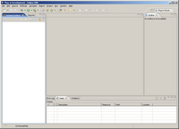 | This shows a new install of Eclipse in the Java development perspective. |
| 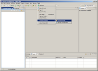 | Click on the 'Help' menu and select 'Software Updates > Find and Install...' |
| 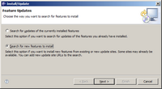 | Select 'Search for New Features to Install' and click 'Next' |
| 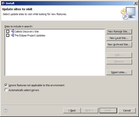 | The Install dialog should come up. Click on 'New Remote Site' to add a new Eclipse update site. |
| 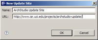 |
This brings up an information dialog. Enter 'ArchStudio Update Site' (or anything you like)
in the first field, and the following URL in the second:
http://www.isr.uci.edu/projects/archstudio-update/ |
| 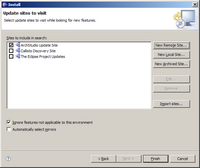 | The Install dialog should return. Ensure that the ArchStudio update site is checked off and click 'Finish.' |
| 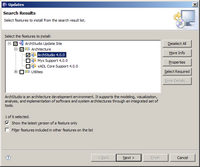 | Navigate to the Architecture group and check the box next to ArchStudio. All necessary features are included with ArchStudio, there is no need to install any other features. The other features are provided for developers that want to use ArchStudio components in their own projects. |
| 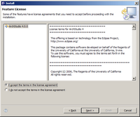 | The license agreement for ArchStudio will be displayed. You must agree to the license agreement to install ArchStudio. |
| 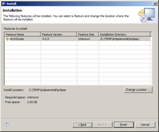 | A summary dialog will be displayed. Click 'Finish' to install ArchStudio. |
| 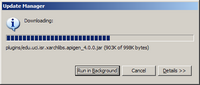 | Eclipse will download ArchStudio and other required features. |
| 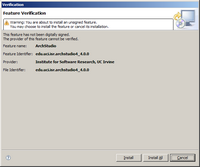 | A final confirmation dialog will be displayed asking you to confirm installation of the downloaded features. |
| 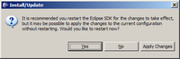 | You will be asked if you want to restart Eclipse. Click 'Yes' and restart the workbench. (If you don't, you may not be able to start the ArchStudio perspective properly the first time). |
| 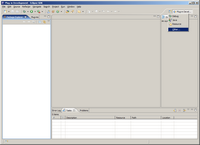 | When the workbench restarts, click on the 'Open Perspective' button in the upper-right corner. Select 'Other...' from the menu. |
| 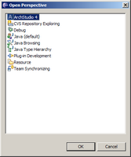 | This brings up the Open Perspective dialog. A perspective is simply an arrangement of views (tabbed areas of the display and editors) in Eclipse. Select the ArchStudio 4 perspective to reconfigure Eclipse's UI to look like ArchStudio. |
| This is the opening view of ArchStudio 4. The Outline View is on the upper left, showing the structure of an open document in the target editor. Editors are displayed in the upper right. The lower left displays the file system navigator which manages projects and files. The lower right displays the ArchStudio launcher on a tabbed panel with a few other ArchStudio views. | |
| 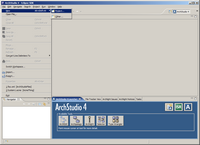 | At this point ArchStudio is completely installed and working. We will walk through the creation of a new project and xADL file to get started, though. On the File Menu, select New > Project. |
| 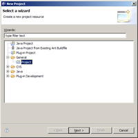 | This brings up the New Project dialog. Select a new generic project; ArchStudio projects are not special. |
| 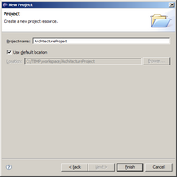 | Name your new project whatever you like. |
| 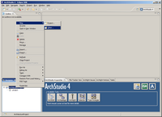 | Right-click on the project and select New > File... |
| 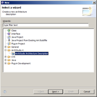 | Select "ArchStudio Architecture Description" as the new file type. |
| 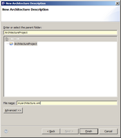 |
Select your project as the parent and give your xADL file a filename.
xADL filenames end in .xml
|
| 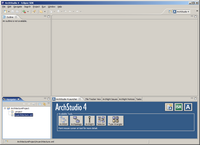 | That's it. You can now drag your file from the navigator and drop it on one of the tool buttons on the ArchStudio Launcher to open it. The easiest editor to get started with is Archipelago, the graphical editor. |
Updates to ArchStudio are also deployed through the ArchStudio update site and are available through Eclipse's plug-in update mechanisms.
Comments or questions on this tutorial should go to Eric Dashofy.
{kind=link}
{kind=link}
{kind=link}
{kind=link}
{kind=link}
{kind=link}
{kind=link}
{kind=link}
{kind=link}
{kind=link}
{kind=link}
{kind=link}
{kind=link}
{kind=link}
{kind=link}
{kind=link}
{kind=link}
{kind=link}
{kind=link}
{kind=link}
{kind=link}
{kind=link}